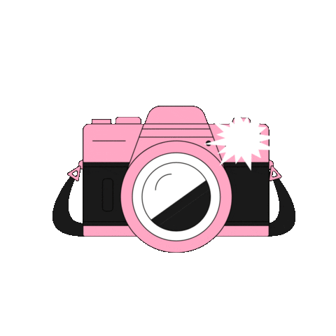

Artículos Recientes

¿Cómo tomar una buena foto?
La fotografía es un arte que nos permite congelar momentos inolvidables y expresar nuestra creatividad.
Para lograrlo, es esencial dominar el manejo de una cámara. Las cámaras modernas ofrecen una amplia gama de opciones y funciones,
desde el ajuste del ISO hasta la apertura y la velocidad de obturación. Además, la composición, la iluminación y la perspectiva
son elementos clave para capturar imágenes impactantes. Experimenta y descubre cómo utilizar tu cámara como una herramienta para
plasmar tu visión única en cada fotografía.
Publicado el 14/05/2023 por @FrannyPants

La nueva era de los plegables
Los celulares plegables han llegado para revolucionar nuestra experiencia móvil, ¡Prepárate para adentrarte en una dimensión tecnológica totalmente futurista! Con pantallas flexibles y diseños vanguardistas, estos dispositivos nos transportan hacia un futuro donde la portabilidad y la versatilidad se fusionan en un solo artefacto. Imagina tener un teléfono que se despliega para convertirse en una tableta, o que se pliega como un libro para caber en tu bolsillo. La era de los plegables ha llegado y con ella, un sinfín de posibilidades tecnológicas que desafían los límites de nuestra imaginación. ¡Prepárate para ser testigo de la magia de la innovación!
Publicado el 11/05/2023 por @ZestZoy

Servicio técnico en casa
¿Sabías que puedes convertirte en el héroe de tus propios celulares? Te brindamos la oportunidad de aprender a reparar tus dispositivos con tus propias manos. Con guías detalladas y herramientas adecuadas, podrás solucionar problemas comunes como pantallas rotas, baterías agotadas y botones defectuosos. Ahora puedes evitar moverte y los costos de servicios. Además, adquirirás habilidades técnicas valiosas que podrás aplicar en el futuro. ¡No esperes más para tomar el control y convertirte en un maestro de la reparación de celulares en la comodidad de tu hogar!
Publicado el 10/05/2023 por @Franimal
Servicio técnico en casa
¿Sabías que puedes convertirte en el héroe de tus propios celulares? Te brindamos la oportunidad de aprender a reparar tus dispositivos con tus propias manos. Con guías detalladas y herramientas adecuadas, podrás solucionar problemas comunes como pantallas rotas, baterías agotadas y botones defectuosos. Ahora puedes evitar moverte y los costos de servicios. Además, adquirirás habilidades técnicas valiosas que podrás aplicar en el futuro. ¡No esperes más para tomar el control y convertirte en un maestro de la reparación de celulares en la comodidad de tu hogar!
Publicado el 10/05/2023 por @Franimal

 /Lens4Gear
/Lens4Gear /Lens4Gear
/Lens4Gear @Lens4Gear
@Lens4Gear